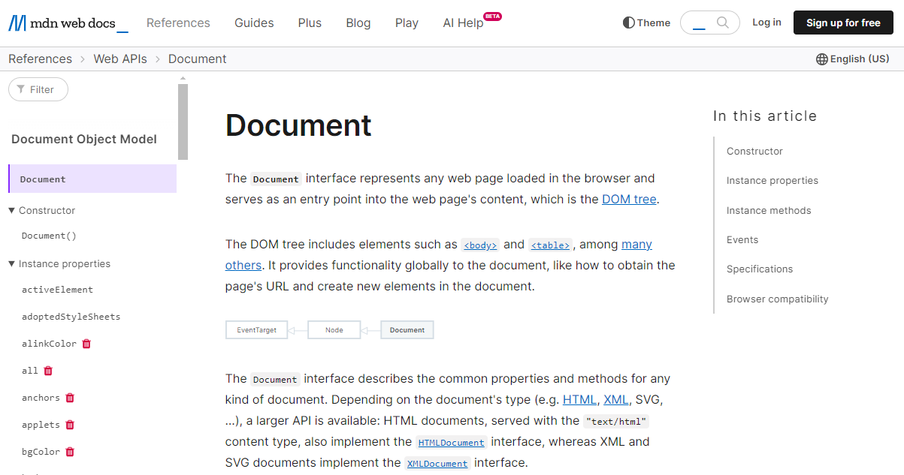
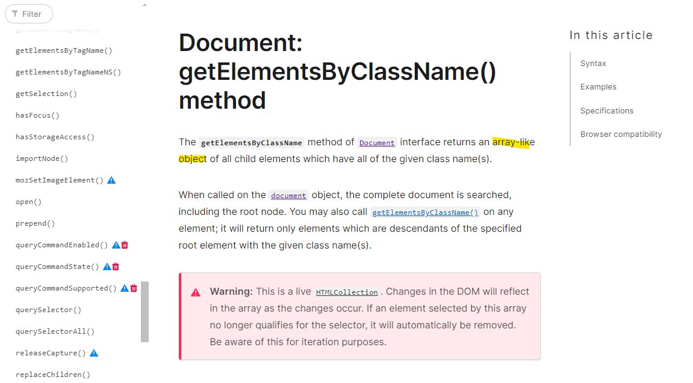
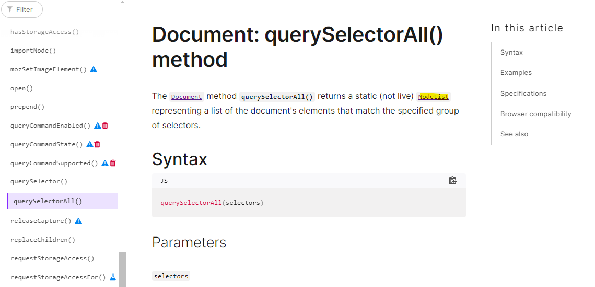

About
About
When I was coding the Tic-tac-toe game I had a problem to manipulate the board positions using DOM API methods.
What was the problem?
There are many methods to seletct elements and manipulae them
using Java Script. It's necessary to pay attention which data type
each method return. Some of them return only one element, other
return more a group of elements using different data types.
Google the DOM API Reference and read each method and examples how to use them.



I decided to test separadly test each method to understand the return and the right wayt to interact with the elements.
It's better to understand first which is the right method use before adding them to the code. I spend a long time until undertand the problem was just this
3 - Reflect on how confident you feel using each of these problem-solving techniques/processes:?The last few days I was reluctant, but my main blocker was the doubt about if I should spend more time learning Java Script or not to progress to the bootcamp. I had a good conversation with Joseph about the course and my question and this helped me a lot. I was close to give up. Lucy also helped me a lot.